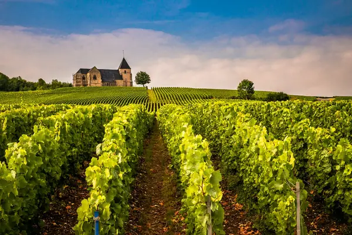

Pinot Meunier grape

Photo: Sue Winston on Unsplash
Pinot Meunier is a red grape known for red cherry, plum, spice. Its best-known homes are Champagne.
Primary flavours
- Red cherry
- Plum
- Spice
- Red apple
Taste profile
Origin and history
A mutation of Pinot Noir; 'meunier' means miller, after the white down on its leaves that looks like a dusting of flour.
Where it grows
Champagne (especially the Vallée de la Marne), Germany (Württemberg, as Schwarzriesling), England, Australia and California.
Structure
Light to medium body, high acidity and low tannin; mainly used for sparkling wine, giving fruitiness to blends.
Aromas, young and aged
Young: red cherry, red apple, strawberry and plum, with a slightly smoky or spicy edge. With age: brioche, toast and dried fruit (in Champagne).
Ageing
Most Meunier-heavy Champagnes best within 3–7 years; top single-variety bottlings can age 10–15.
Also known as
Meunier (official name in Champagne), Schwarzriesling and Müllerrebe (Germany).
Good to know
It buds late and ripens early, so it suits the frost-prone Vallée de la Marne; Krug and Jérôme Prévost champion it for character and age-worthiness.
Pinot Meunier wines to try
Real bottles from The Wine Library.
Louis Pommery England Brut
Hampshire · English Sparkling Wine · Chardonnay, Pinot Noir, Pinot Meunier
Pommery's English sparkling: crisp green apple, citrus and a fine chalky finish.
Food: Oysters, fish and chips
Louis Pommery England Brut Rosé
Hampshire · English Sparkling Wine · Pinot Noir, Chardonnay, Pinot Meunier
Bright red berries and fresh acidity in a delicate English pink fizz.
Food: Smoked salmon, strawberries
Rathfinny Wine Estate Blanc de Noirs Brut
Sussex · Pinot Noir, Pinot Meunier
Richer Sussex fizz from black grapes: red apple, redcurrant and toast.
Food: Roast chicken, charcuterie
Digby Fine English Reserve Brut Rosé
Sussex · English Sparkling Wine · Pinot Noir, Chardonnay, Pinot Meunier
Mature English rosé fizz: red fruit, toast and a long dry finish.
Food: Lobster, game terrine
Pommery Brut Royal
Champagne · Chardonnay, Pinot Noir, Pinot Meunier
Fresh, Chardonnay-led house style: citrus, white flowers and a light, crisp finish.
Food: Oysters, canapés
Pommery Brut Apanage 1874
Champagne · Chardonnay, Pinot Noir, Pinot Meunier
A rounder, more gastronomic Pommery: ripe pear, brioche and hazelnut.
Food: Poultry, white fish
Pommery Brut Rosé Royal
Champagne · Pinot Noir, Chardonnay, Pinot Meunier
Delicate pink Pommery with red berries and a crisp, dry finish.
Food: Salmon, red berries
Pommery Apanage Brut Rosé
Champagne · Pinot Noir, Chardonnay, Pinot Meunier
Fuller rosé with wild strawberry, citrus peel and gentle toast.
Food: Duck, tuna
A. Levasseur Extrait Gourmand
Champagne · Pinot Meunier, Chardonnay, Pinot Noir
Grower Champagne from the Marne: generous, fruity and gently toasty.
Food: Gougères, chicken
A. Levasseur Extrait Gourmand Rosé
Champagne · Pinot Meunier, Chardonnay
Grower rosé with ripe red fruit and a soft, creamy mousse.
Food: Charcuterie, salmon
Charles Heidsieck Rosé Réserve
Champagne · Pinot Noir, Chardonnay, Pinot Meunier
Vinous rosé with red fruit, spice and toasty reserve wines.
Food: Duck, lamb
Laurent-Perrier La Cuvée Brut
Champagne · Chardonnay, Pinot Noir, Pinot Meunier
Light, Chardonnay-rich house style: citrus, white peach and finesse.
Food: Aperitif, oysters
Ayala Rosé Majeur
Champagne · Chardonnay, Pinot Noir, Pinot Meunier
Fresh, low-dosage rosé: redcurrant, citrus and a crisp, dry finish.
Food: Sushi, prawns
Moët & Chandon Rosé Impérial
Champagne · Pinot Noir, Pinot Meunier, Chardonnay
Bright, fruity rosé: wild strawberry, cherry and a soft mousse.
Food: Salmon, berries
Moët & Chandon Grand Vintage
Champagne · Chardonnay, Pinot Noir, Pinot Meunier
The vintage Moët: riper fruit, toast and more depth than the NV.
Food: Chicken, scallops
Bollinger Rosé Brut
Champagne · Pinot Noir, Chardonnay, Pinot Meunier
Pinot-rich, vinous rosé with red fruit, spice and Bollinger's toasty depth.
Food: Duck, salmon
Perrier-Jouët Blason Rosé
Champagne · Pinot Noir, Pinot Meunier, Chardonnay
Floral, fruity rosé with red berries and a delicate texture.
Food: Salmon, prawns
Perrier-Jouët Belle Époque Rosé
Champagne · Chardonnay, Pinot Noir, Pinot Meunier
Elegant prestige rosé: red berries, citrus and white flowers.
Food: Lobster, duck
Armand de Brignac Ace of Spades Brut Rosé
Champagne · Pinot Noir, Pinot Meunier, Chardonnay
Opulent rosé in the metal-clad bottle: ripe red fruit and a creamy finish.
Food: Celebrations, red fruit
Henriot Brut Souverain
Champagne · Chardonnay, Pinot Noir, Pinot Meunier
Chardonnay-led house blend: citrus, white flowers and brioche.
Food: Aperitif, oysters
Billecart-Salmon Brut Rosé
Champagne · Chardonnay, Pinot Noir, Pinot Meunier
Pale, elegant classic rosé: strawberry, citrus and fine bubbles.
Food: Salmon, sushi
Krug Rosé
Champagne · Pinot Noir, Chardonnay, Pinot Meunier
Deep, spicy rosé with Krug's richness: red fruit, citrus peel and toast.
Food: Lamb, tuna
Denbies Wine Estate Greenfields Cuvée
Surrey · Surrey Hills · Chardonnay, Pinot Noir, Pinot Meunier
Traditional-method English sparkling with green apple, brioche and bright acidity.
Food: Smoked salmon, canapés, soft cheese
Langham Wine Estate Culver Classic Cuvée
Dorset · Chardonnay, Pinot Noir, Pinot Meunier
Chalk-grown Dorset fizz, citrus, red apple and toasty depth with a long finish.
Food: Shellfish, fish pie, aged cheddar
Lyme Bay Winery Classic Cuvée
Devon · Chardonnay, Pinot Noir, Pinot Meunier
Traditional-method English fizz with green apple, brioche and fine, lively bubbles.
Food: Smoked salmon, crab sandwiches, fish and chips
Hattingley Valley Classic Reserve
Hampshire · English Sparkling Wine · Chardonnay, Pinot Noir, Pinot Meunier
Crisp Hampshire blend with baked apple, citrus and a soft, nutty richness from some oak-fermented wine.
Food: Fish and chips, Comté
Ridgeview Bloomsbury
Sussex · English Wine PDO · Chardonnay, Pinot Noir, Pinot Meunier
Chardonnay-led English fizz with lemon curd, crisp apple and toasty brioche, crisp and celebratory.
Food: Fish and chips, smoked salmon blinis
Appellations that use Pinot Meunier
- Trento DOC · Trentino-Alto Adige · Sparkling
Similar red grapes
Explore all grapes in the interactive guide
The Wine Reference newsletter
New wines, stories and career guides, one email a week at most.
Over 18s only. Unsubscribe any time with one click. Your email is stored securely by Kit and never shared.
Support The Wine Reference
This guide is free, with no paywall. If it helped you choose a bottle, you can buy me a glass and keep it growing.
🍷 Buy me a glass